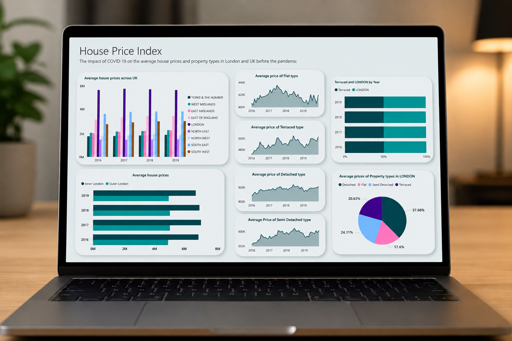

Dashboarding & Business Intelligence · Power BI
A comparative study of UK house price data built in Power BI, using the official UK House Price Index alongside geographic data for all 32 London boroughs. I built two separate dashboards covering the same measures across two eras, 2016 to 2019 and 2020 to 2022, so the pre-pandemic market and the pandemic market could be read side by side rather than as one blurred trend line.
The research question was specific: how did COVID-19 affect average house prices and property types across London boroughs compared with the UK as a whole? Splitting the timeline was the decision that made the answer visible, because a single continuous view flattens exactly the shift the question was asking about.
Official government price data, joined to borough geography so the results could be read on a map rather than only in a table.
The source was the UK House Price Index published on the London Datastore, which supplies two tables. Average Price holds monthly prices across 49 columns covering every London borough and UK region. By Type holds quarterly data across 16 columns split by detached, semi-detached, terraced and flat. Both series run from January 1995, giving more than two decades of history to work against.
Price data alone cannot be mapped, so I brought in a second dataset containing latitude and longitude for each of London's 32 boroughs and modelled a relationship between the two. That join is what turned a borough name in a spreadsheet into a point on a map, and it is the step that made the geographic pattern legible at all.
Most of the work happened before a single chart existed.
2016 to 2019: the market London was coming from.
| Segment | Change | Note |
|---|---|---|
| West Midlands | +12.97% | Strongest regional growth in the pre-pandemic window |
| Terraced properties | +2.44% | Highest-rising property type over the period |
| London | +0.83% | Notably flat against regional growth elsewhere |
The pre-pandemic picture already complicated the assumption that London leads the UK market. Regional growth outside the capital was substantially stronger, with the West Midlands rising almost sixteen times faster than London over the same three years. Exploratory analysis also confirmed that flats were the most commonly sold property type in both London and the rest of the UK, though London skewed far more heavily toward flats while the rest of the country skewed toward detached homes.
2020 to 2022: what actually changed, and what did not.
Flats recorded the steepest rise of any property type between 2020 and 2022, climbing steadily to a peak of 5.52% in 2022. Inner London rose 5.85% across the same window and Westminster 3.36%, both trending upward rather than correcting.
That result runs against the widely repeated narrative of the period, which held that lockdown pushed demand out of dense city centres and toward larger homes with outdoor space. In this data, Inner London held firm and flats led the market. The London housing market stayed robust through the pandemic rather than softening, which is the finding worth carrying out of the project.
Chart type chosen per question, not per preference.
Each visual answered a different question. Line and area charts carried movement over time. Stacked and column charts compared regions and property types against each other. Pie charts showed the mix of property types sold in each zone. A combination column and line chart handled Inner versus Outer London, where both absolute price and rate of change mattered at once. The borough map made the geographic spread immediately readable.
View the report and Power BI files on GitHub ↗What the project taught me.
The analysis only worked because of the framing. Comparing two defined periods rather than plotting one long series is what let the pandemic effect separate from ordinary market growth, and that choice was made before any chart was built. Deciding what to compare is a larger part of the job than choosing how to display it.
If I extended it, I would bring in transaction volume alongside price. Price alone shows what buyers paid but not how many were buying, and a market can rise on thin volume. Adding volume would separate genuine demand from scarcity, which is the obvious limitation of what is here.